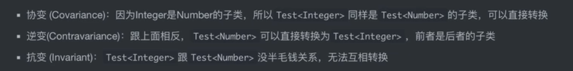

Java 泛型进阶：类型界限、类型擦除与协变逆变
- 泛型方法( 支持静态方法 和 成员方法 )
private static <T> T test(T t ){
return t ;
}
main: tring s = test("ws是gay") ; (创建泛型对象)
- JDK内部实现的泛型方法
- 数组排序
Arrays.sort(arr , new Comparator<Integer>(){ //需要实现Compare的接口内部的比较函数即可<>泛型方法
public int compare(Integer o1 , Integer o2){ //int compare(T o1, T o2);内部需要实现的泛型方法
return o2 - o1 ;
}
}) ;
System.out.println(Arrays.toString(arr)) ;
2.数组复制
Integer[] brr = Arrays.copyOf(arr , 3) ; 传值类型改变 -> 实现不同复制 -( 泛型方法 )
3.创建泛型方法 + 方法调用 + 需要设置类型进行传参数 -> (子 , 各种)类名.<类型>方法名() ;
Today.<String>name() ;
String str = name() ;
private static <T> T name(){
return null ;
}
- 泛型界限( 限制输入内容 )
public class New_Class<T extends Number>{
String name ;
int date ;
T ws ;
New_Class(String name , int date, T ws){
this.name = name ;
this.date = date;
this.ws = ws;
System.out.println(name + date + ws);
}
当对象被限制在具体类中时 , 创建出的对象可以实现对应类的方法
通配符也可支持实现泛型限制
创建 ? 型时候, 对应的未知参数可以调用对应的继承父类, 不设计继承类时仍按Object类进行处理
Ws000<? extends Number> score = new Ws000<>("score" , 22 , 12 ) ;
<T 后接extends时限制上限 / 后接super时限制下限 ( ?通配符可以实现限制上限不可实现限制下限 )
创建下限时 : 类型需要使用Object类进行接收
- 类型擦去
底层逻辑 : T ( 无上限 ) 编译后T类型会直接转化为Object类
创建上限 : 发生类型擦去 , T型参数 会被编译为上限类型( 可以去除尖括号直接创建对象 , 注意传参类型为上限即可 ) 创建上限的子类对象时内部编译会实现强制类型转化为子类
interface Study<T>{
T study(T t ) ;
}
static class Tree implements Study<String>{
public String study(String str){
return "ws是gay"+str ;
}
}
编译时编译器自动生成
// 编译器自动生成的桥接方法
public Object study(Object var1) {
return this.study((String)var1); // 将Object转型为String，调用实际方法
}
保持多态 : 先调用接口中的Object方法 , 再跳转到桥接方法中的study(Object)方法中去 , 最后再转接到实际的参数为String 方法 , return result ;
对象之间进行instance of 判断时不可以使用泛型 , 只可使用其原始类型
泛型类不支持创建参数化数组( 参数化的引用类型对象 )
- 协变和逆变
Tec<Integer> tec = new Tec<>(12);
Tec<父类> tec1 = tec ; //无法创建对象
static class Tec<T>{
T name ;
public Tec(T name){
this.name = name ;
}
}

在JAVA中创建的泛型类<明确形式> 只能创建相应的类别 . 不具备协变的性质 ( 无法实现子类对象创建父类对象 ) : 数组支持协变
协变缺点 : 创建一个父类包含子类之后 ,传入参数( 属于父类不属于子类 )时若不按照原类型仍然会报错
逆变 : 父类转子类 ->也不支持
抗变 : 父子无关系 . 编译器不会相关联
不支持创建父类的泛型对象( 抗变属性 )
通过<? extends > 创建类的对象后 该对象就具有协变性质 ( 父类包子类 )
super 设置下限 : 可以支持抗变性质
也是 ? super 进行创建子类对象 只可以Object类型的结果去接收
但使用Object 可以读取但只限制于Object类型的结果